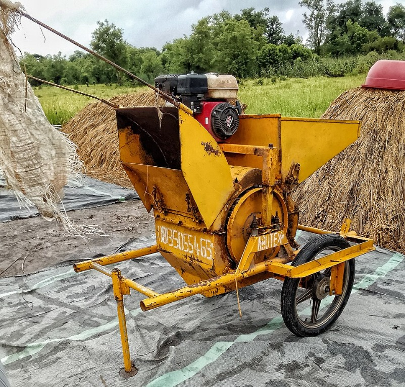
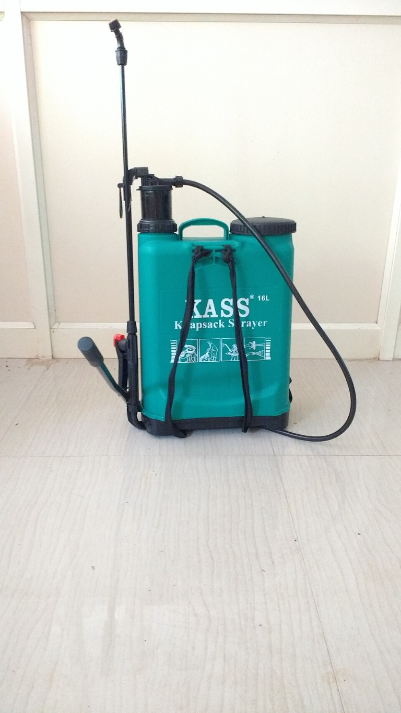
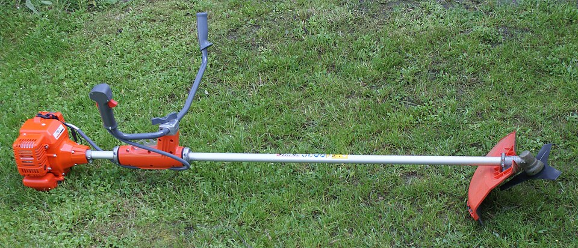
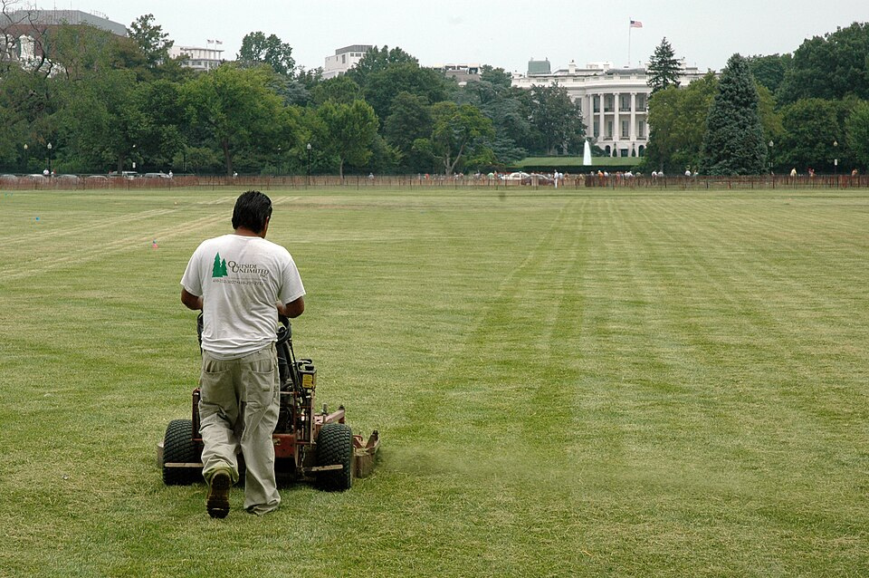
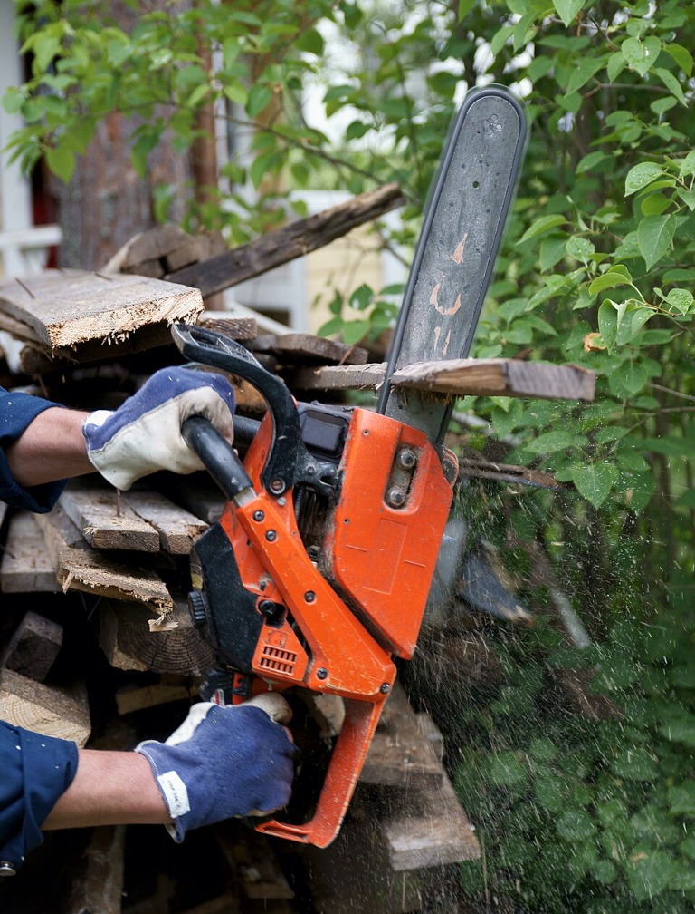

Equipment to rent in Bukidnon
Browse farm equipment shared by local owners. Check availability and rental terms with the owner before making arrangements.
Browse farm equipment shared by local owners. Check availability and rental terms with the owner before making arrangements.

Manolo Fortich, Bukidnon
7.5 HP gasoline engine for preparing rice paddies and vegetable plots.
₱1,200 / day
Rent Now
Manolo Fortich, Bukidnon
Diesel pump for farmland irrigation. Includes hoses.
₱850 / day
Rent Now
Manolo Fortich, Bukidnon
Portable power for remote farm work and equipment.
₱1,000 / day
Rent Now
Manolo Fortich, Bukidnon
Separates rice grains from stalks after harvest and is easy to move around the farm.
₱900 / day
Rent Now
Manolo Fortich, Bukidnon
Portable sprayer for vegetable plots, garden rows, and small farms.
₱350 / day
Rent Now
Manolo Fortich, Bukidnon
For clearing grass and weeds along field edges and garden paths.
₱500 / day
Rent Now
Manolo Fortich, Bukidnon
Push mower for maintaining grass around gardens, farm paths, and small plots.
₱450 / day
Rent Now
Malaybalay City, Bukidnon
Portable saw for cutting branches and preparing firewood.
₱600 / day
Rent Now